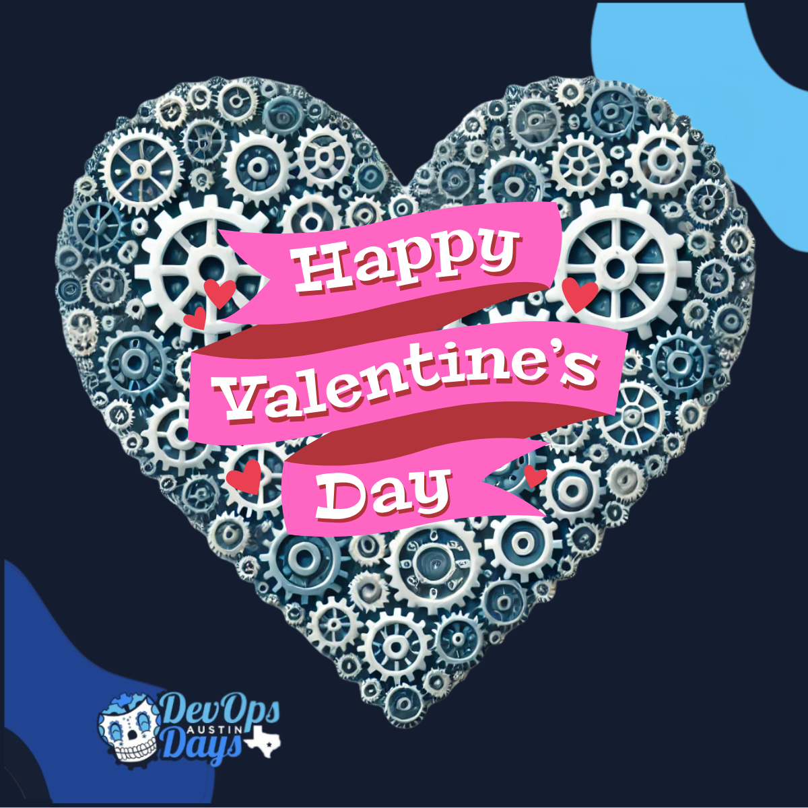
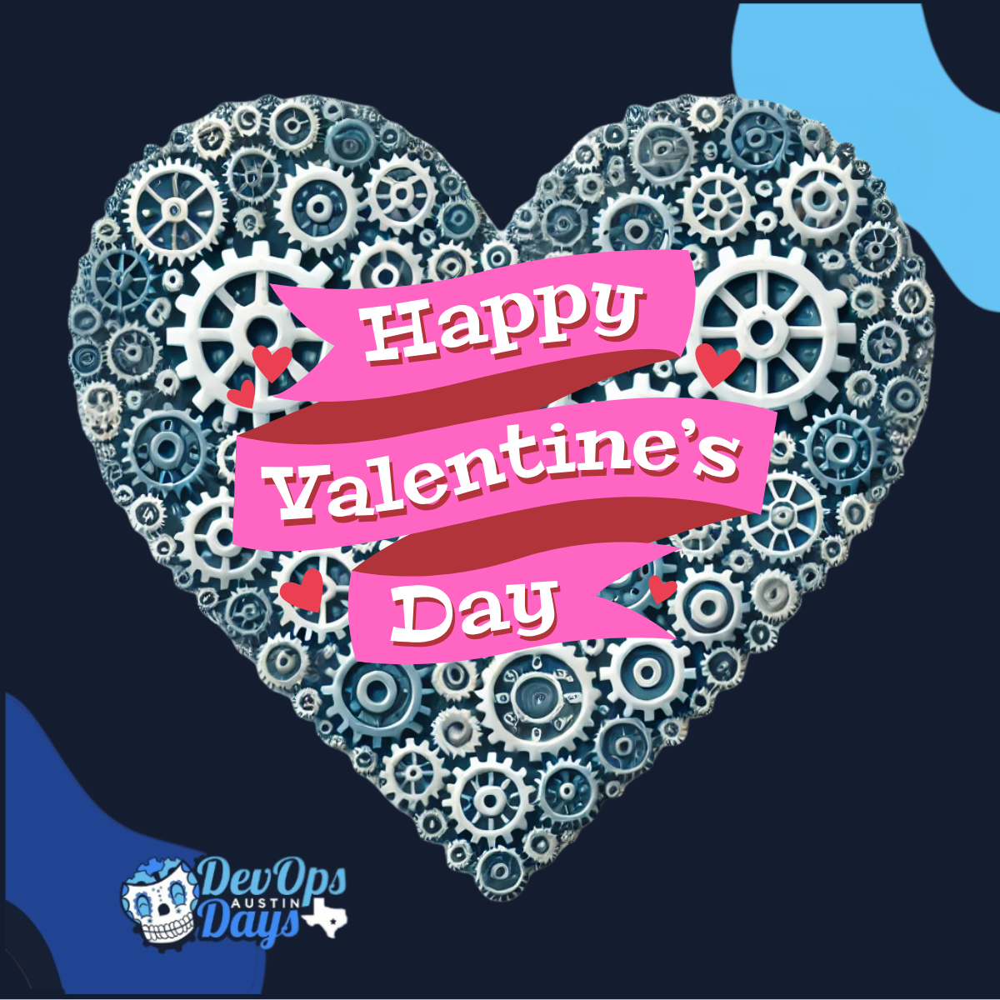

Content for Social Media Posts @DevOpsDays Austin
As a marketing organizer, I created a series of social media posts for
the
DevOpsDays Austin
conference. The goal was to promote the event and engage with the
community. The posts were designed to be visually appealing and
informative, highlighting key speakers, sessions, and networking
opportunities. This is my first year as a marketing organizer for
DevOpsDays Austin, and I hope to continue learning and iterating.

 
